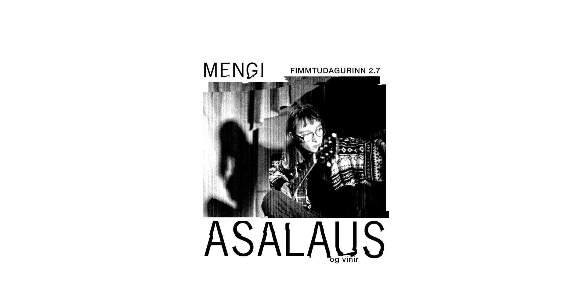
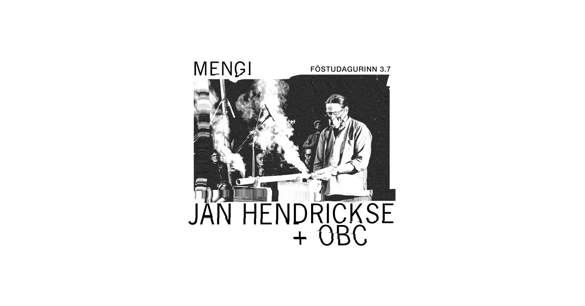

Upcoming Events

THU 02.07 Asalaus og vinir
Tickets Fimmtudagurinn 2. Júlí doors 19:30 / show 20:00 2500kr / pay what u can Miguel Gallego, Event (Alek Green), and Asalaus (Ása Önnu Ólafsdóttir) met at the sound art mfa program at Columbia University in New York. They will, along with poet Kate Ehrenberg, perform an improvised sound/music/poetry piece. Event Event is originally from lək̓ʷəŋən/ Songhees territories, now living between New York and Tiohtià:ke. He has performed at festivals such as EVERYSEEKER and Verboden and with artists such as Pharmakon, The Rita, Boy Harsher, Moss Harvest, and many others. Asalaus Asalaus (Ása Önnu Ólafsdóttir, she/her, b. 2000) is a sound artist, musician and composer hailing from Reykjavík, Iceland. Her practice focuses on the relationship between object and sound. Kate Ehrenberg is a poet and nursery school teacher living in New York.

FRI 03.07 Jan Hendrickse / OBC
Tickets Friday, July 3rd JAN HENDRICKSE / OBC doors 19:30 / show 20:00 2500kr / pay what u can Jan will be performing a freely improvised set using a range of traditional, modified and self-designed aerophones. Continuing her DIY explorations of instrument-building and feedback as a core component of sound production, OBC is wielding a homemade feedback bass based on the Halldorophone. This electro-acoustic instrument, being played with frequency-beating, oscillates between tonal noise and rhythms turning into an analog-acoustic drum machine. From there, a relation develops between the instrument and the player leading to an improvisation that keeps evolving between resonant drone, textures and pure roaring noise. ----- JAN HENDRICKSE Jan Hendrickse is an artist, musician, researcher and educator. He is work is concerned with a range of hybrid practices, often employing collaboration. He initially trained as a western Classical flute player and he has also studied several flute traditions including Turkish Ney, Chinese Xiao and Dizi as well as Rajasthani Satara and Alghoza. His PhD research explored respiratory aesthetics, involving instrument design, composition and improvisation. He has undertaken several international projects for the British Council including work in Tanzania, East Jerusalem and Nepal. He teaches at the Guildhall School of Music & Drama and is a visiting lecturer at Listháskóli Ísland. He has received commissions for concert, installation works and contemporary dance scores, as well as working as a performer and recording artist. He has performed with a wide range of artists from many traditions, as well as featuring regularly as a soloist on woodwind instruments for major film scores including The Lord of the Rings, The Passion of the Christ, Apocalypto and many others. He is currently working on a new commission for Huddersfield Contemporary Music Festival for the Borindo, a five thousand year old ceramic flute from Sindh in Pakistan. OBC (Objet Bruitiste Contemporain) OBC is a French sound artist and performer based in Reykjavik, Iceland. She studies feedback phenomena and their relations to ghosts under the direction of Nicola Privato while conceiving her own instrumental devices. She explores free improvisation with her DIY feedback instrument(s) : semi-critical systems creating tipping points between rhythms and sounds. Active as an artist, a sound engineer and an organiser within Geneva and Reykjavik’s DIY/DIT underground scenes, she creates a rich sonic landscape that is built from the diversity of her inspirations and her musical approaches : sometimes drony, sometimes noisy but always punk.

FRI 17.07 Kaktus Einarsson
Tickets Friday, July 17th KAKTUS EINARSSON doors 19:30 / show 20:00 2500kr / pay what u can Kaktus Einarsson is an Icelandic musician, songwriter, and producer whose work moves fluidly between indie pop, electronic music, and experimental composition. Born and raised in Reykjavík, he began performing professionally at just 10 years old as part of experimental electronic outfit Ghostigital. Einarsson first gained international recognition as a founding member and frontman of Icelandic post-punk band Fufanu, whose sharp, atmospheric sound took them from the Reykjavík underground to major festival bills across Europe. With Fufanu, he opened hometown shows for Radiohead and Red Hot Chili Peppers, supported Blur at Hyde Park, and performed at festivals including Primavera Sound, Rock Werchter, Musilac, and Down The Rabbit Hole. Launching his solo career in 2021, Einarsson released debut album ‘Kick The Ladder’, a genre-blurring record combining classical instrumentation, electronic textures, and adventurous pop songwriting. The album established his solo voice and was later remixed by artists including JFDR, Modular Project and Brandt Brauer Frick. His 2024 album ‘Lobster Coda’ featured collaborations with Damon Albarn and Nanna of Of Monsters and Men, continuing his instinct for balancing melodic songwriting with inventive production and genre-fluid arrangements. Kaktus returns with third album ‘Factoid Happiness’, out September 18 th on One Little Independent Records. Featuring collaborators including John Grant, RAKEL, Thibault Gomez and Jessica Winter, the record explores themes of identity, technology, family, political division and the increasingly manufactured nature of modern happiness. Known for bringing both sophistication and unpredictability to his work, Kaktus Einarsson has built a career bridging underground experimentation and refined pop craftsmanship, establishing himself as one of Iceland’s most distinctive contemporary artists.

SAT 25.07 Oliver Devaney
Tickets Saturday, July 25th OLIVER DEVANEY doors 19:30 / show 20:00 2500kr / pay what u can Oliver Devaney is a musician and artist based in both Reykjavík and New York City. Having collaborated with a wide range of bands and artists over the years including Xiupill, Charliedwarf, and Sameheads, he is now currently putting the finishing touches on his debut solo album. He will perform this new material at Mengi on the 25th of July.

FRI 31.07 BKPM
Tickets Friday, July 31st BKPM doors 19:30 / show 20:00 2500kr / PAY WHAT U CAN ‘BKPM (big kinky polyamorous marriage) is an experimental band fusing together sounds and styles from krautrock as well as old and new post punk. After bursting onto the scene in 2023 their sound evoked comparisons to bands like Talking Heads and Can. In august the band released their debut album “Bíddu Ha?”’